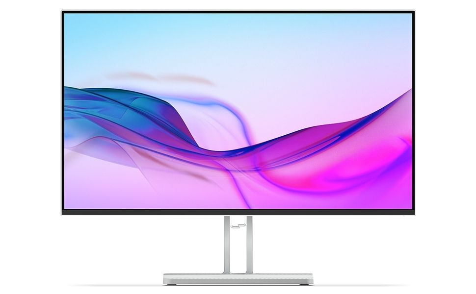
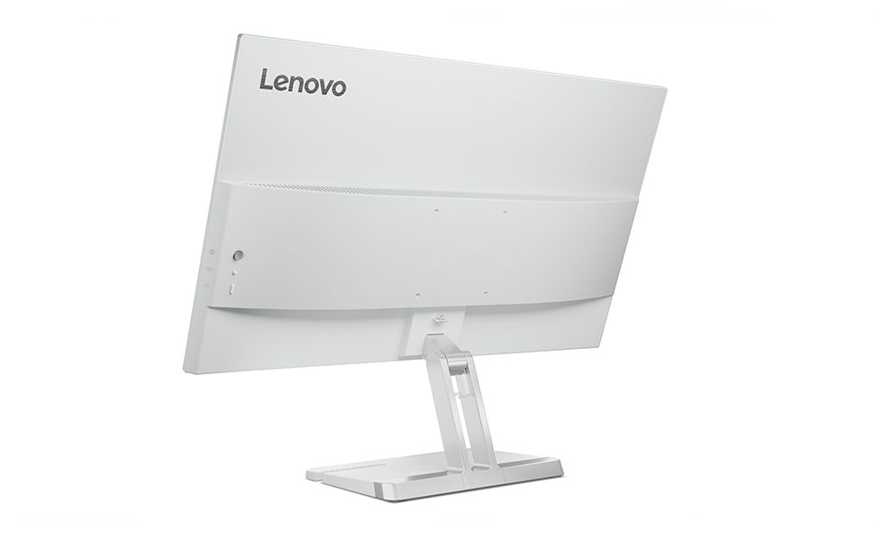
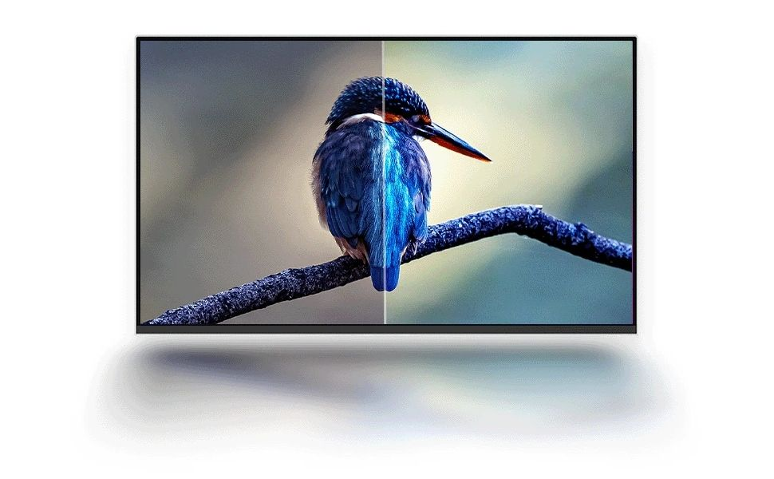
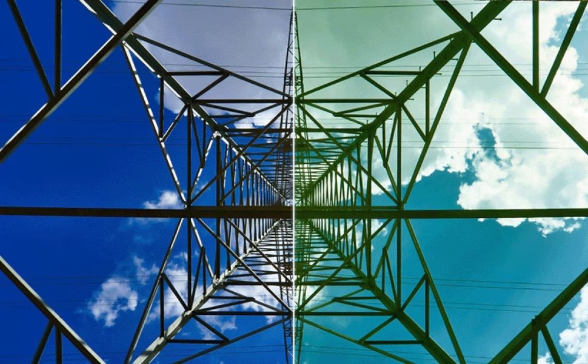
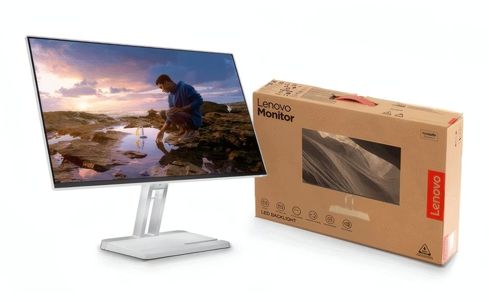

4 taraflı ultra ince çerçeve tasarımıyla geniş görüş alanı sağlar. 27 inç IPS ekran, modern çalışma alanları için şık bir görünüm sunar.

%99 sRGB renk gamı ve IPS panel teknolojisiyle canlı, doğal renkler sunar. Her detayda profesyonel düzeyde görüntü netliği elde edin.

100 Hz yenileme hızı ve 1 ms MPRT ile akıcı ve gecikmesiz bir deneyim sağlar. Oyun, film ve işte kusursuz performans sunar.

Dahili 3W çift hoparlör güçlü ve net ses sunar. HDMI ve VGA bağlantı seçenekleriyle geniş uyumluluk sağlar.

Doğal Düşük Mavi Işık teknolojisiyle göz yorgunluğunu azaltır. Çevre dostu üretimiyle sürdürülebilir bir teknoloji deneyimi sunar.